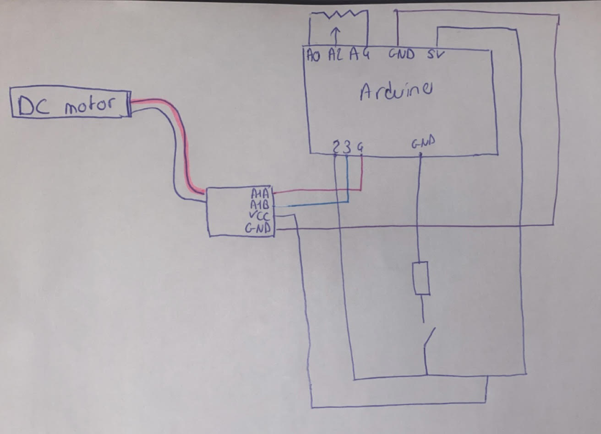

<br>
#### Week 4: Microcontroller Programming
<i> Assignment:
Program an Arduino board to do something. The examples in the Arduino Projects Book provide good starting points. You may also wish to use this assignment to build on the previous assignment.
Include code snippets in your documentation.
Draw a schematic of your circuit. Use a hand sketch, Flastad, Fusion 360 (Eagle), or other.
Bring your circuit to class Tuesday and be ready to do a brief live demo. </i>
<p>For this assignment, I decided to use my kinetic sculpture. I wanted to programm the arduino so that I could turn the motor on and off with a switch, and I also wanted to control the speed with a potentiometer.</p>
<p> Here are the components I used:</p>
<ul>
<li>Microcontroller (MCU): Arduino Uno or similar </li>
<li>DC motor </li>
<li>L9110 </li>
<li>Wires</li>
<li>Small screwdriver</li>
<li>Button</li>
<li>Potentiometer</li>
<li>Breadboard</li>
<li>Resistor</li>
</ul>
<p>I started by making the circuit. Here's a photo and a drawing.</p>

<p>Then I programmed the button as a switch and I coded on Arduino so that I could use the potentiometer to control my motor speed.</p>
<p>Here is the code.</p>
<pre>
<code class="language-arduino">
// Broche de l'interrupteur
const int interrupteurPin = 2;
// Broches du module L9110
const int moteurPin1 = 3;
const int moteurPin2 = 4;
// Broche du potentiomètre
const int potentiometrePin = A2;
// Variables pour stocker les états de l'interrupteur
int etatInterrupteur = 0;
int etatInterrupteurPrecedent = 0;
// Variable pour stocker l'état du moteur
bool moteurAllume = false;
// Variable pour stocker la vitesse du moteur
int vitesseMoteur = 0;
void setup() {
// Définition des modes des broches
pinMode(interrupteurPin, INPUT);
pinMode(moteurPin1, OUTPUT);
pinMode(moteurPin2, OUTPUT);
pinMode(A0, OUTPUT); //This will be GND for the potentiometer
pinMode(A4, OUTPUT); //This will be 3.3V for the pot
digitalWrite(A0, LOW);
digitalWrite(A4, HIGH);
}
void loop() {
// Lecture de l'état de l'interrupteur
etatInterrupteur = digitalRead(interrupteurPin);
// Vérification si l'interrupteur est activé (était relâché précédemment)
if (etatInterrupteur == HIGH && etatInterrupteurPrecedent == LOW) {
// Inversion de l'état du moteur
moteurAllume = !moteurAllume;
delay(100); // Délai pour éviter les rebonds du bouton
}
// Contrôle de l'état du moteur
if (moteurAllume) {
int valeurPotentiometre = analogRead(potentiometrePin);
// Cartographie de la valeur du potentiomètre sur la plage de vitesse (0-255)
vitesseMoteur = map(valeurPotentiometre, 0, 1023, 0, 255);
// Tourner le moteur dans une direction
digitalWrite(moteurPin1, HIGH);
digitalWrite(moteurPin2, LOW);
analogWrite(moteurPin1, vitesseMoteur); // Contrôler la vitesse du moteur
} else {
// Arrêter le moteur
digitalWrite(moteurPin1, LOW);
digitalWrite(moteurPin2, LOW);
}
// Mise à jour de l'état précédent de l'interrupteur
etatInterrupteurPrecedent = etatInterrupteur;
}
</code>
</pre>